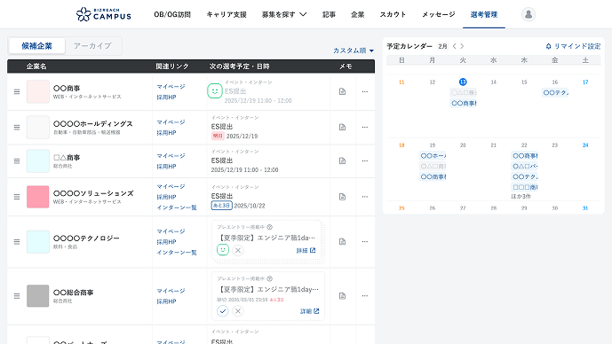

OBOGCampusBoy — プロダクト内に宿るキャラクターの再定義
プロダクト内にひっそり存在するこのキャラクター。名前と役割を改めて整理してみた。
感情の違うBoyが5人いるのか。色が感情を表現しているようだ。Slackで見かけた。
完了画面のチェックマークに紐づくキャラクターとして捉えると、自然と二人の役割が見えてくる。
管理画面のような情報密度の高い場面では、キャラクターの存在がかえって邪魔になる。

▲ 選考管理画面 — 情報密度が高く、キャラクターを置くとノイズになる
静的に置くのではなく、動きとともに登場・退場させることで存在感を適切にコントロールする。
アクションのタイミングで自然に現れ、役目を果たしたら静かに消える。常駐させないことでノイズを防ぎつつ、プロダクトに温かみを添える。